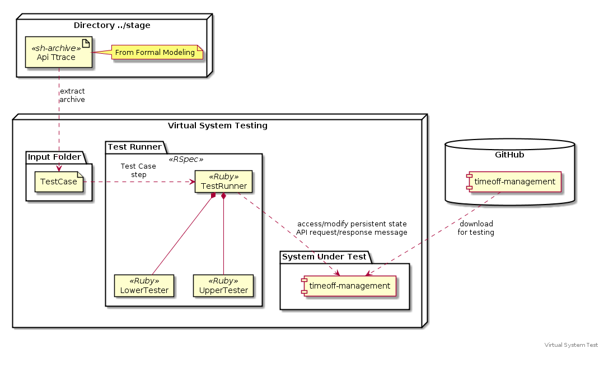

timeoff-management application is downloaded to Virtual System
Testing from GitHub repository. Api Trace archives are extracted
from ../stage -directory into a Input Folder, where Test Runner
can access Test Case Steps, and make calls to System Under Test
(SUT) using Lower Test interfaces, accesing and modifying SUT
persistent state, and Upper Tester, interfacing via API
request/response messages with the SUT.
